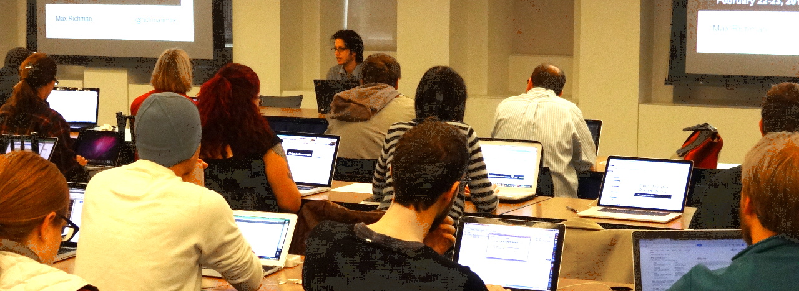

Open Data Day DC
Friday, Feb. 20 – Saturday, Feb. 21, 2015

Open Data Day DC is a yearly hackathon and training event in Washington, DC on the same day as more than 100 other Open Data Day events throughout the world.
Open Data Day DC 2015 will be on Friday, February 20, 2015 (workshops only) and Saturday, February 21, 2015 (hacking & workshops) at The World Bank in Washington, DC.
It is free and open to the public. No prior experience with open data or hacking is needed. You MUST register to attend. Registration closes three days before the event due to requirements imposed by our venue.
On Friday we will have three workshops. (Hacking will be on Saturday only.)
Registration
Introduction to Open Data
Hands-on introduction to open data by example. Led by Eric Mill.
Breakout Groups
Data Science isn’t Magic
Find out what data science is by doing it. You will obtain, scrub, explore with visualization, model, and interpret data, hands-on with R in RStudio. No prior experience required. Led by Aaron Schumacher.
On Saturday we have parallel tracks for hacking and workshops. You can go between the tracks freely.
Registration / Opening Remarks / Project Pitches
Hacking (all day)
Hacking is any creative problem solving. We break up into groups, decide on projects, and then get working. We typically have projects related to public schools, public transit, government transparency, corruption, and international development.
Do you have to be a coder to hack? No! Designers, writers, statisticians, subject matter experts, and anyone with a passion for open data can be a hacker.
Introduction to Open Data
Hands-on introduction to open data by example. Led by Eric Mill.
Build With, Not For
Laurenellen McCann and Jessie Posilkin will lead a discussion about civic hacking and engaging with the communities we are building applications for.
Open Mapping
A hands-on tutorial in geospatial (mapping) techniques. Led by Max Richman.
Our goals are to strengthen the open data community and to make connections between people and between projects. There is no beer or pizza at our hackathon, no competitions, and no time pressure. This will be the fourth Open Data Day DC event.
Open Data Day DC is committed to providing a safe and welcoming space, without regard to age, gender, race, sexual orientation, gender identity, disability, physical appearance, religion, level of technological knowledge, or any other attribute. For more, see our code of conduct.
Open Data Day DC is organized by Joshua Tauberer (GovTrack.us), Eric Mill, Sam Lee (World Bank), Katherine Townsend, and Julia Bezgacheva (World Bank).
If you have any questions or comments about the event, contact Josh Tauberer at tauberer@govtrack.us.
The Open Data Day DC Archives...
With over 300 participants, Open Data Day DC 2014 was our largest yet. This year we expanded to two days, February 22-23, 2013, at The World Bank.
Our projects included law enforcement effectiveness in developing countries, road safety in the Philippines, launching a new Code for Nepal organization, analyzing open budget data, parsing PDFs, measuring corruption, access to local law, parent choices in DC public schools, cataloging open data, mapping DC’s trees, mapping international conflict, and mapping oil infrastructure.
We also ran four workshops: An Intro to Open Data (by co-organizer Eric Mill), An Intro to Open Collaboration (by Leah Bannon), Open Mapping (by Max Richman), and An Introduction to Python (by Shannon Turner)
Flickr | Eric’s Recap | Sam’s Recap | CodeForDC’s Pre-cap | OpenGov Foundation’s Pre-cap
Open Data Day DC 2014 was organized by Joshua Tauberer (GovTrack.us), Eric Mill (Sunlight Foundation), Sam Lee (World Bank), Katherine Townsend (USAID), and Julia Bezgacheva (World Bank) and hosted by The World Bank, with a pre-party thanks to Development Seed and MapBox, and photography thanks to the Internet Society.
Our second Open Data Day was on February 23, 2013 at The World Bank.
Over 150 developers, data scientists, social entrepreneurs, government employees, and other open data enthusiasts participated in our event, first at a kickoff Friday night at Google’s DC headquarters and then at the Saturday session at The World Bank.
Participants worked on local DC issues, global open source mapping, world poverty, and open government. GitMachines, a project started at the hackathon, won $500,000 from the Knight News Challenge on Open Government!
We also ran an introductory tutorial on open data.
Open Data Day DC 2013 was organized by Josh Tauberer (GovTrack), Eric Mill (Sunlight Foundation), Katherine Townsend (USAID), Dmitry Kachaev (Presidential Innovation Fellow), Sam Lee (The World Bank), and Julia Bezgacheva (The World Bank). Special thanks to The World Bank, and thanks to Google for hosting our pre-party and to the Open Gov Hub for organizing our closing round of drinks.
Eric’s Recap | Sam’s Recap | Josh’s Recap | Tumblr | Storified Tweets | Flickr One | Flickr Two | Hackpad
Press coverage
DCist: Hack D.C.: Hackers Put Open Data to Use to Help Improve Local Government
The Atlantic Cities: Is There a Link Between Walkability and Local School Performance?
Greater Greater Washington: How school tiers match up with Walk Score
Greater Greater Education: Community of civic hackers for education takes shape
The first Open Data Day hackathon in DC was on Dec. 3, 2011 at the Martin Luther King Public Library. It was organized by Josh Tauberer (POPVOX) and Katie Filbert (Wikimedia DC).
The theme of our hackathon was open government data, and participants worked on improving access to U.S. law, scanning federal spending for anomalies following Benford’s Law, understanding farm subsidy grants, building local transit apps, and keeping Congress accountable. Only about half of the participants were programmers, but everyone found a way to be involved.
Read more about what we did on the post-event recap at https://www.popvox.com/features/opendataday2011.
See how it got started.
{kind=link}